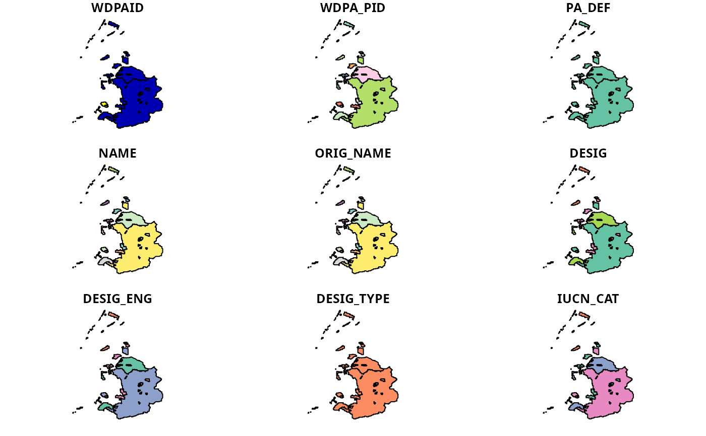

Clean data obtained from the World Database on Protected Areas (WDPA).
wdpa_clean( x, crs = paste("+proj=cea +lon_0=0 +lat_ts=30 +x_0=0", "+y_0=0 +datum=WGS84 +ellps=WGS84 +units=m +no_defs"), snap_tolerance = 1, simplify_tolerance = 0, geometry_precision = 1500, erase_overlaps = TRUE, verbose = interactive() )
| x |
|
|---|---|
| crs |
|
| snap_tolerance |
|
| simplify_tolerance |
|
| geometry_precision |
|
| erase_overlaps |
|
| verbose |
|
sf::sf() object.
This function cleans data from World Database on Protected Areas following best practices (Butchart et al. 2015, Runge et al. 2015, https://www.protectedplanet.net/en/resources/calculating-protected-area-coverage). To obtain accurate protected area coverage statistics for a country, please note that you will need to manually clip the cleaned data to the countries' coastline and its Exclusive Economic Zone (EEZ). Although this function can in theory be used to clean the global dataset, this process can take several weeks to complete. Therefore, it is strongly recommended to use alternative methods for cleaning the global dataset.
Repair invalid geometry (using sf::st_make_valid()).
Exclude protected areas that are not currently implemented
(i.e. exclude areas without the status "Designated",
"Inscribed", "Established").
Exclude United Nations Educational, Scientific and Cultural Organization (UNESCO) Biosphere Reserves (Coetzer et al. 2014).
Create a field ("GEOMETRY_TYPE") indicating if areas are
represented as point localities ("POINT") or as polygons
("POLYGON").
Exclude areas represented as point localities that do not have a reported spatial extent (i.e. missing data for the field
Geometries are wrapped to the dateline (using
sf::st_wrap_dateline() with the options
"WRAPDATELINE=YES" and "DATELINEOFFSET=180").
Reproject data to coordinate system specified in argument to
crs (using sf::st_transform()).
Fix any invalid geometries that have manifested
(using sf::st_make_valid()).
Buffer areas represented as point localities to circular areas
using their reported spatial extent (using data in the field
"REP_AREA" and sf::st_buffer(); see Visconti
et al. 2013).
Snap the geometries to a grid to fix any remaining
geometry issues (using argument to snap_tolerance and
lwgeom::st_snap_to_grid()).
Fix any invalid geometries that have manifested
(using sf::st_make_valid()).
Simplify the protected area geometries to reduce computational burden
(using argument to simplify_tolerance and
sf::st_simplify()).
Fix any invalid geometries that have manifested
(using sf::st_make_valid()).
The "MARINE" field is converted from integer codes
to descriptive names (i.e. 0 = "terrestrial",
1 = "partial", 2 = "marine").
Zeros in the "STATUS_YR" field are replaced with
missing values (i.e. NA_real_ values).
Zeros in the "NO_TK_AREA" field are replaced with NA
values for areas where such data are not reported or applicable
(i.e. areas with the values "Not Applicable"
or "Not Reported" in the "NO_TK_AREA" field).
Overlapping geometries are erased from the protected area data
(discussed in Deguignet et al. 2017). Geometries are erased such
that areas associated with more effective management
categories ("IUCN_CAT") or have historical precedence are retained
(using sf::st_difference()).
Slivers are removed (geometries with areas less than 0.1 square meters).
The size of areas are calculated in square kilometers and stored in
the field "AREA_KM2".
Butchart SH, Clarke M, Smith RJ, Sykes RE, Scharlemann JP, Harfoot M, ... & Brooks TM (2015) Shortfalls and solutions for meeting national and global conservation area targets. Conservation Letters, 8: 329--337.
Coetzer KL, Witkowski ET, & Erasmus BF (2014) Reviewing Biosphere Reserves globally: Effective conservation action or bureaucratic label? Biological Reviews, 89: 82--104.
Deguignet M, Arnell A, Juffe-Bignoli D, Shi Y, Bingham H, MacSharry B & Kingston N (2017) Measuring the extent of overlaps in protected area designations. PloS One, 12: e0188681.
Runge CA, Watson JEM, Butchart HM, Hanson JO, Possingham HP & Fuller RA (2015) Protected areas and global conservation of migratory birds. Science, 350: 1255--1258.
Visconti P, Di Marco M, Alvarez-Romero JG, Januchowski-Hartley SR, Pressey, RL, Weeks R & Rondinini C (2013) Effects of errors and gaps in spatial data sets on assessment of conservation progress. Conservation Biology, 27: 1000--1010.
#> Warning: local data is out of date: Nov 2020#> Warning: plotting the first 9 out of 32 attributes; use max.plot = 32 to plot all# }